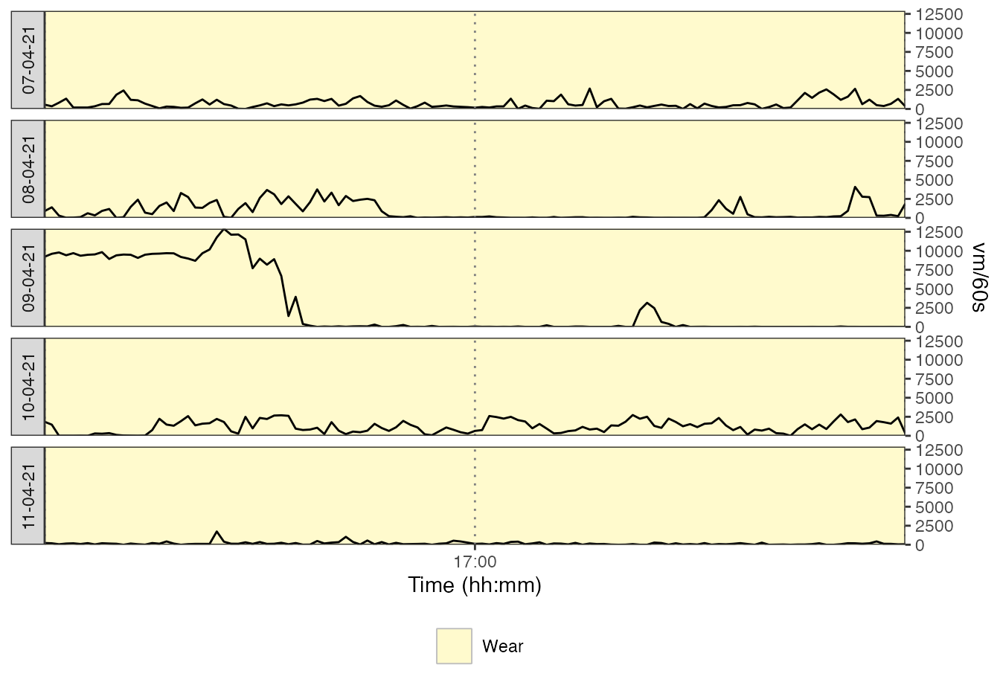
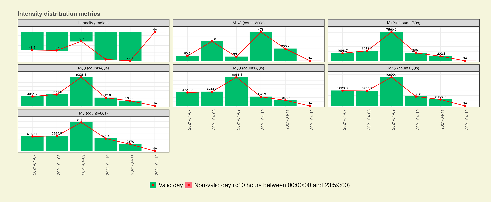
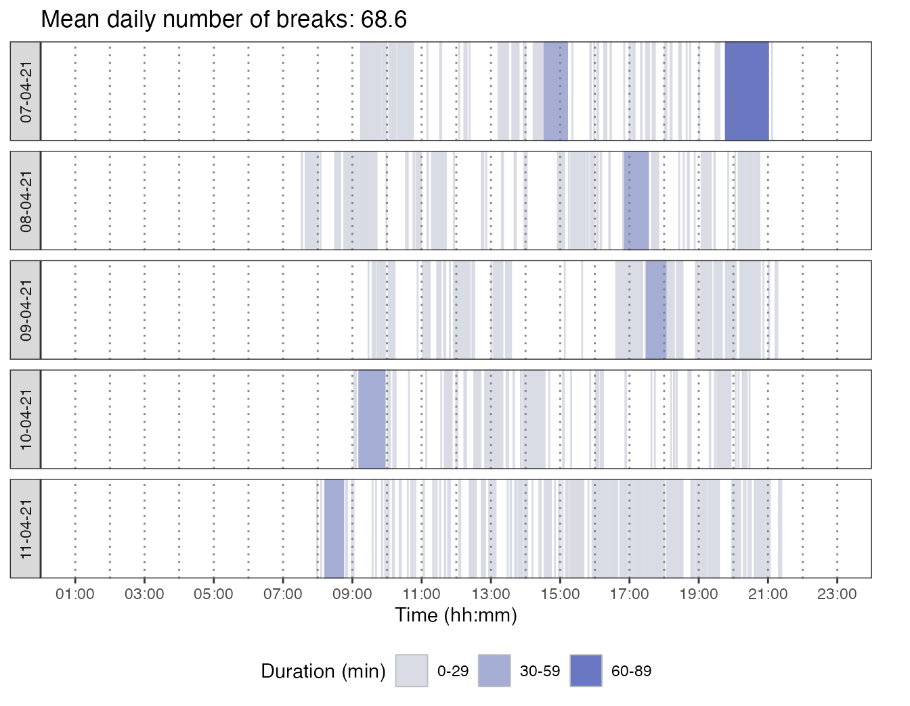

The activAnalyzer package was primarily built for working through a Shiny app. The procedure for using the app is explained in the related user’s guide. The functions used in this app can also be used to analyze data outside the app, as shown below.
Getting file
file <- system.file("extdata", "acc.agd", package = "activAnalyzer")Preparing dataset
mydata <- prepare_dataset(data = file)Getting nonwear/wear time marks
mydata_with_wear_marks <-
mydata %>%
mark_wear_time(
to_epoch = 60,
cts = "vm",
frame = 90,
allowanceFrame = 2,
streamFrame = 30
)
#> frame is 90
#> streamFrame is 30
#> allowanceFrame is 2
Viewing data with nonwear/wear time marks and with a zoom in on the figure
plot_data(
data = mydata_with_wear_marks,
metric = "vm",
zoom_from = "16:00:00",
zoom_to = "18:00:00"
)
Getting activity intensity marks
mydata_with_intensity_marks <-
mark_intensity(
data = mydata_with_wear_marks,
col_axis = "vm",
equation = "Sasaki et al. (2011) [Adults]",
sed_cutpoint = 200,
mpa_cutpoint = 2690,
vpa_cutpoint = 6167,
age = 32,
weight = 67,
sex = "male"
)Viewing data with activity intensity marks
plot_data_with_intensity(
mydata_with_intensity_marks,
metric = "vm",
valid_wear_time_start = "00:00:00",
valid_wear_time_end = "23:59:59"
)Viewing data with activity intensity marks and grey bands to highlight the daily period considered for analysis
plot_data_with_intensity(
mydata_with_intensity_marks,
metric = "vm",
valid_wear_time_start = "07:00:00",
valid_wear_time_end = "22:00:00"
)Viewing data with activity intensity marks and a zoom in on the figure
plot_data_with_intensity(
mydata_with_intensity_marks,
metric = "vm",
zoom_from = "13:00:00",
zoom_to = "16:30:00"
)Getting activity metrics by day
results_by_day <-
mydata_with_intensity_marks %>%
recap_by_day(
age = 32,
weight = 67,
sex = "male",
valid_wear_time_start = "07:00:00",
valid_wear_time_end = "22:00:00",
start_first_bin = 0,
start_last_bin = 10000,
bin_width = 500
)Computing means of the metrics using the valid days
mean_results <-
results_by_day$df_all_metrics %>%
average_results(minimum_wear_time = 10, fun = "mean")Computing medians of the metrics using the valid days
median_results <-
results_by_day$df_all_metrics %>%
average_results(minimum_wear_time = 10, fun = "median")Showing activity volume metrics
Results by day: Graphical view
create_fig_res_by_day(
results_by_day$df_all_metrics,
minimum_wear_time_for_analysis = 10,
start_day_analysis = "00:00:00",
end_day_analysis = "23:59:00",
metrics = "volume",
epoch_label = "60s"
) + theme(plot.margin = margin(1, 1, 1, 1, "cm"))Means | Medians computed using valid days
create_flextable_summary(
results_summary_means = mean_results,
results_summary_medians = median_results,
metrics = "volume",
epoch_label = "60s"
)Metric |
Daily mean | median |
|---|---|
Number of valid days |
5 |
Wear time (min) |
767.8 (12:47:48) | 770.0 (12:50:00) |
Axis 1 total counts |
513108.6 | 359125.0 |
VM total counts |
970344.6 | 806592.1 |
Axis 1 mean (counts/min) |
686.7 | 498.8 |
VM mean (counts/min) |
1290.6 | 1047.5 |
SED time (min) |
283.0 (04:43:00) | 292.0 (04:52:00) |
LPA time (min) |
391.8 (06:31:48) | 407.0 (06:47:00) |
MPA time (min) |
57.8 (00:57:48) | 51.0 (00:51:00) |
VPA time (min) |
35.2 (00:35:12) | 4.0 (00:04:00) |
MVPA time (min) |
93.0 (01:33:00) | 77.0 (01:17:00) |
SED wear time proportion (%) |
36.9 | 40.0 |
LPA wear time proportion (%) |
50.6 | 50.2 |
MPA wear time proportion (%) |
7.6 | 7.1 |
VPA wear time proportion (%) |
4.9 | 0.6 |
MVPA wear time proportion (%) |
12.4 | 10.7 |
Ratio MVPA / SED |
0.33 | 0.27 |
Total MVPA MET-hr |
8.63 | 5.56 |
Total kcal |
1730.04 | 1548.93 |
PAL |
1.99 | 1.78 |
Total steps |
14869 | 14056 |
Comparisons with norms and recommendations
# PAL
g_pal <- create_fig_pal(score = mean_results[["pal"]], "en") + theme(plot.margin = margin(2, 1, 0.5, 1, "cm"))
# Steps
g_steps <- create_fig_steps(score = mean_results[["total_steps"]], "en") + theme(plot.margin = margin(0, 1, 0.5, 1, "cm"))
# MVPA
g_mvpa <- create_fig_mvpa(score = mean_results[["minutes_MVPA"]], "en") + theme(plot.margin = margin(0, 1, 0, 1, "cm"))
# SED
g_sed <- create_fig_sed(score = mean_results[["minutes_SED"]], "en") + theme(plot.margin = margin(0, 1, 0, 1, "cm"))
# MVPA/SED ratio
g_ratio <- create_fig_ratio_mvpa_sed(score = mean_results[["ratio_mvpa_sed"]], "en") + theme(plot.margin = margin(0, 1, 1, 1, "cm"))
# Whole figure
g_pal / g_steps / (g_mvpa | g_sed | g_ratio) +
plot_layout(heights = c(0.8, 0.7, 1.5)) & theme(legend.justification = "center")Showing step accumulation metrics
Results by day: Graphical view
create_fig_res_by_day(
results_by_day$df_all_metrics,
minimum_wear_time_for_analysis = 10,
start_day_analysis = "00:00:00",
end_day_analysis = "23:59:00",
metrics = "step_acc",
epoch_label = "60s"
) + theme(plot.margin = margin(1, 1, 1, 1, "cm"))Means | Medians computed using valid days
create_flextable_summary(
results_summary_means = mean_results,
results_summary_medians = median_results,
metrics = "step_acc",
epoch_label = "60s"
)Metric |
Daily mean | median |
|---|---|
Number of valid days |
5 |
Max step acc. 60 min (steps/min) |
57.85 | 50.90 |
Max step acc. 30 min (steps/min) |
70.05 | 71.63 |
Max step acc. 20 min (steps/min) |
74.29 | 83.05 |
Max step acc. 5 min (steps/min) |
95.20 | 112.80 |
Max step acc. 1 min (steps/min) |
109.00 | 118.00 |
Peak step acc. 60 min (steps/min) |
74.60 | 70.88 |
Peak step acc. 30 min (steps/min) |
86.60 | 86.73 |
Peak step acc. 20 min (steps/min) |
91.75 | 97.70 |
Peak step acc. 5 min (steps/min) |
105.24 | 117.20 |
Peak step acc. 1 min (steps/min) |
109.00 | 118.00 |
Showing intensity gradient and MX metrics

Results by day: Graphical view
create_fig_res_by_day(
results_by_day$df_all_metrics,
minimum_wear_time_for_analysis = 10,
start_day_analysis = "00:00:00",
end_day_analysis = "23:59:00",
metrics = "int_distri",
epoch_label = "60s"
) + theme(plot.margin = margin(1, 1, 1, 1, "cm"))
Means | Medians computed using valid days
create_flextable_summary(
results_summary_means = mean_results,
results_summary_medians = median_results,
metrics = "int_distri",
epoch_label = "60s"
)Metric |
Daily mean | median |
|---|---|
Number of valid days |
5 |
Intensity gradient |
-1.51 | -1.36 |
M1/3 (counts/60s) |
1983.5 | 1600.9 |
M120 (counts/60s) |
4330.7 | 3585.2 |
M60 (counts/60s) |
5123.3 | 4706.1 |
M30 (counts/60s) |
5830.0 | 5678.7 |
M15 (counts/60s) |
6311.4 | 6073.2 |
M5 (counts/60s) |
6824.5 | 6229.5 |
Radar view based on the means of valid days
create_fig_mx_summary(
data = mean_results,
labels = NULL,
mpa_cutpoint = 2690,
vpa_cutpoint = 6167
)Showing sedentary behaviour accumulation metrics based on valid days
Getting results
accum_metrics_sed <-
compute_accumulation_metrics(
data = mydata_with_intensity_marks,
behaviour = "sed",
dates = c("2021-04-07", "2021-04-08", "2021-04-09", "2021-04-10", "2021-04-11")
)Temporal distribution of sedentary bouts
accum_metrics_sed$p_breaks
#> Warning in geom_rect(aes(xmin = hms::as_hms(0), xmax = hms::as_hms(valid_wear_time_start), : All aesthetics have length 1, but the data has 343 rows.
#> ℹ Did you mean to use `annotate()`?
#> Warning in geom_rect(aes(xmin = hms::as_hms(valid_wear_time_end), xmax = hms::as_hms("23:59:59"), : All aesthetics have length 1, but the data has 343 rows.
#> ℹ Did you mean to use `annotate()`?
Alpha coefficient, median bout duration (MBD), usual bout duration (UBD), and Gini index
p1 <- accum_metrics_sed$p_alpha + guides(color = "none", fill = "none")
p2 <- accum_metrics_sed$p_MBD + guides(color = "none", fill = "none")
p3 <- accum_metrics_sed$p_UBD
p4 <- accum_metrics_sed$p_gini
(p1 | p2) / (p3 | p4) + plot_layout(guides = "collect") & theme(legend.position = 'bottom')
#> Warning in geom_segment(aes(x = MBD, xend = MBD, y = 0, yend = max(summarised_bouts$n, : All aesthetics have length 1, but the data has 343 rows.
#> ℹ Did you mean to use `annotate()`?
#> Warning in geom_segment(aes(x = 0, y = 0.5, xend = UBD, yend = 0.5), linetype = "dashed", : All aesthetics have length 1, but the data has 27 rows.
#> ℹ Did you mean to use `annotate()`?
#> Warning in geom_segment(aes(x = UBD, y = 0.5, xend = UBD, yend = 0), linetype = "dashed", : All aesthetics have length 1, but the data has 27 rows.
#> ℹ Did you mean to use `annotate()`?
#> Warning in geom_segment(aes(x = max_bout_duration/2, y = 0.4, xend = UBD, : All aesthetics have length 1, but the data has 27 rows.
#> ℹ Did you mean to use `annotate()`?Showing physical activity accumulation metrics based on valid days
Getting results
accum_metrics_pa <-
compute_accumulation_metrics(
mydata_with_intensity_marks,
behaviour = "pa",
dates = c("2021-04-07", "2021-04-08", "2021-04-09", "2021-04-10", "2021-04-11")
)Temporal distribution of physical activity bouts
accum_metrics_pa$p_breaks
#> Warning in geom_rect(aes(xmin = hms::as_hms(0), xmax = hms::as_hms(valid_wear_time_start), : All aesthetics have length 1, but the data has 346 rows.
#> ℹ Did you mean to use `annotate()`?
#> Warning in geom_rect(aes(xmin = hms::as_hms(valid_wear_time_end), xmax = hms::as_hms("23:59:59"), : All aesthetics have length 1, but the data has 346 rows.
#> ℹ Did you mean to use `annotate()`?Alpha coefficient, median bout duration (MBD), usual bout duration (UBD), and Gini index
p1 <- accum_metrics_pa$p_alpha + guides(color = "none", fill = "none")
p2 <- accum_metrics_pa$p_MBD + guides(color = "none", fill = "none")
p3 <- accum_metrics_pa$p_UBD
p4 <- accum_metrics_pa$p_gini
(p1 | p2) / (p3 | p4) + plot_layout(guides = "collect") & theme(legend.position = 'bottom')
#> Warning in geom_segment(aes(x = MBD, xend = MBD, y = 0, yend = max(summarised_bouts$n, : All aesthetics have length 1, but the data has 346 rows.
#> ℹ Did you mean to use `annotate()`?
#> Warning in geom_segment(aes(x = 0, y = 0.5, xend = UBD, yend = 0.5), linetype = "dashed", : All aesthetics have length 1, but the data has 39 rows.
#> ℹ Did you mean to use `annotate()`?
#> Warning in geom_segment(aes(x = UBD, y = 0.5, xend = UBD, yend = 0), linetype = "dashed", : All aesthetics have length 1, but the data has 39 rows.
#> ℹ Did you mean to use `annotate()`?
#> Warning in geom_segment(aes(x = max_bout_duration/2, y = 0.4, xend = UBD, : All aesthetics have length 1, but the data has 39 rows.
#> ℹ Did you mean to use `annotate()`?